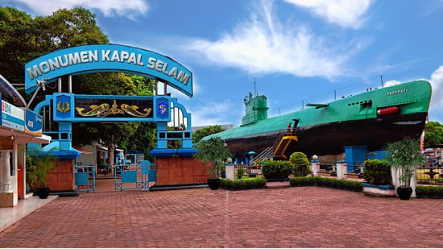
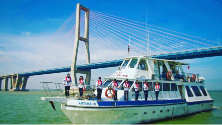

Surabaya Zoo (Indonesian Kebon Binatang Surabaya or KBS) is a 15-hectare (37-acre) zoo located in the city of Surabaya in East Java, Indonesia. There are over 50 species of animals that are in Surabaya Zoo. From Sumatran Elephant to American Black Bear.
The Monkasel is a Russian Submarine that saw service in the Indonesian navy shortly after Indonesian independence. After being decommissioned the submarine was turned into a tourist attraction. The Monkasel now rests in the heart of Surabaya on Pemuda Street near the bank of the Kalimas river.
The Sampoerna Museum is based in a grand colonial era building. The downstairs portion of the building houses the museum. There are lots of exhibits, many from the family collection, and old photos.
Surabaya is a major seaport and one of the most interesting ways of exploring the city and seeing exactly what this means is joining a Harbour Cruise on Artama III. The cruise takes more approximately 2 hours and follows the waterfront of the city pass the bustling port and under the famous bridge (Suramadu Bridge).
